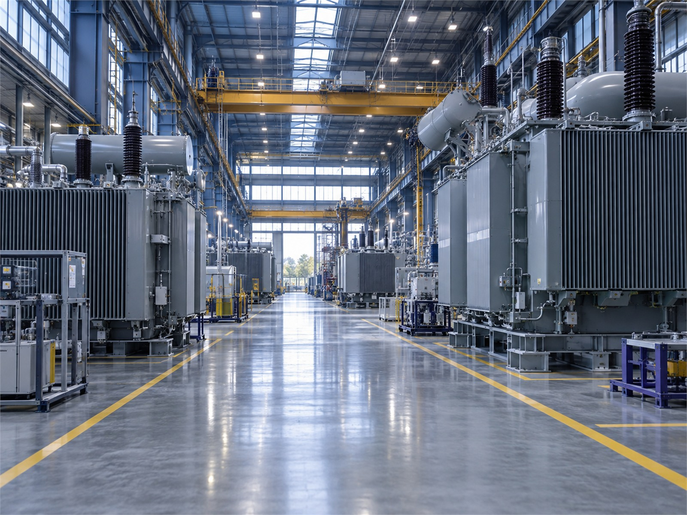
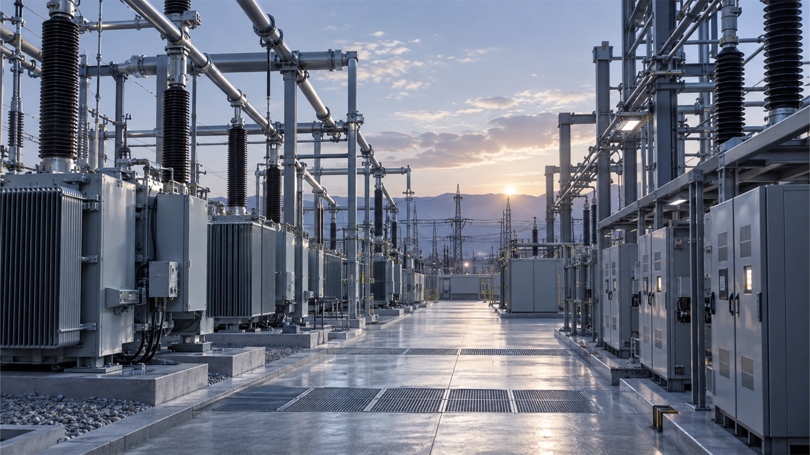
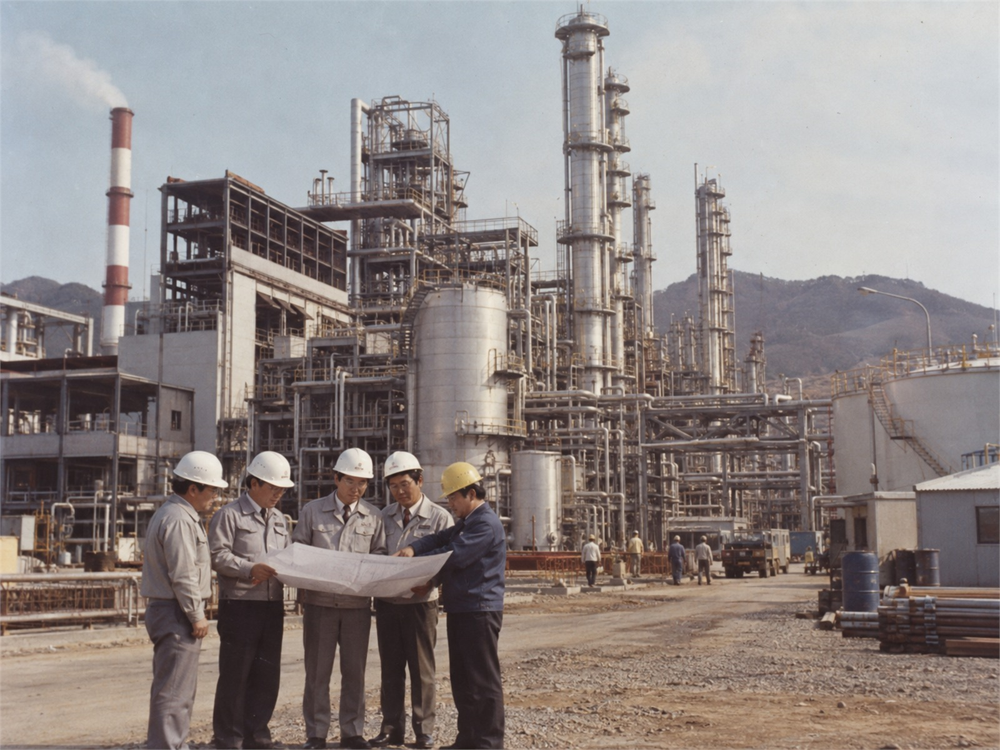

NEXORA
전력 솔루션
154kV급 변압기와 배전반을 만들어 발전소와 공장, 철도에 납품합니다.
- 변압·배전
- 전력 제어
- 에너지 관리
변압기·차단기 같은 전력기기를 만들고, 공장 설비의 설계부터 설치, 정비까지 맡습니다.

154kV급 변압기와 배전반을 만들어 발전소와 공장, 철도에 납품합니다.

설치한 설비는 정비 주기를 정해 두고 직접 점검합니다.

설계 도면과 시공 기록, 운영 데이터를 한 시스템에 묶어 넘겨 드립니다.